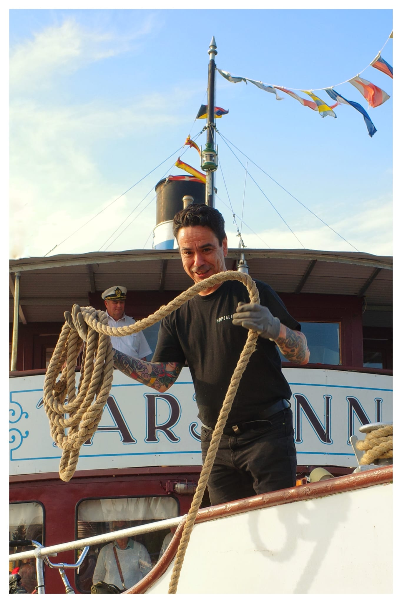

Kansimies, jolla on noin 26 vuotta kokemusta merillä ja yli 30 alusta takana, Jäämeren troolareista ropax-laivoihin ja höyrylaivaan. Kannan vastuuni työstä, turvatoimitehtävästäni ja koko laivaporukan hyvinvoinnista. Jos eteen tulee työ, jota en osaa, opettelen. Etsin ensisijaisesti laivatyötä, ja tavoitteenani on matruusin pätevyys.

Viimeisimmät alukset. Kaikkiaan yli 30 alusta ja noin 26 vuotta merillä.
| Alus | Varustamo / tyyppi | Toimi | Aika |
|---|---|---|---|
| s/s Tarjanne | Höyrylaiva | Matruusi | 5–9/2026 |
| m/s Bore Bay | Bore | Puolimatruusi | 2024 (2 kk) |
| m/s Finlandia | Eckerö Line | Puolimatruusi | 2022–2024 |
2000–2009 Norjassa ja Islannissa: syvänmeren kalastusalukset, Jäämeren troolarit, kääntönuottalaiva ja autolinjalaiva. Vuodesta 2009 Suomen kauppalaivastossa: matkustajalaivat, saariston isot yhteysalukset, Finnlinesin ropax-alukset, ESL:n kuivarahtialus ja erikoisrahtilaiva kansainvälisillä vesillä.
Ruorivahti eli laivan ohjaaminen, kiinnitys ja irrotus, kansi- ja huoltotyöt sekä matkustajien opastus. Ensimmäinen kauteni sisävesiliikenteessä.
Kansityöt, vahdinpito, kiinnitys ja irrotus sekä lastaus ja lossaus.
Kansityöt, vahdinpito, kiinnitys ja irrotus, lastaus ja lossaus sekä matkustajien opastus.
Aloitin laivanhoitajana, suoritin puolimatruusin koulutuksen ja pätevöidyin kansimieheksi. Matkustajalaivat, saariston yhteysalukset, ropax-alukset, kuivarahti ja erikoisrahtilaiva kansainvälisillä vesillä.
Jäämeren troolarit ja kääntönuottalaiva. Pitkät merijaksot ja raskas kansityö kaikissa sääoloissa.
Puusepän työt ja keikkailu muusikkona ennen merille lähtöä.
Kuvaan lyhyen esittelyvideon, joka ilmestyy tähän pian.
Todistukset lisätään tänne pian. Saat ne jo nyt pyytämällä minulta suoraan.